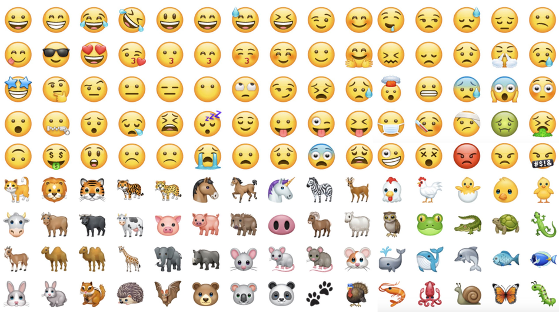

Analyzing Askaan database to understand the possible patterns
that will affect real estate prices. In this project, I built an advanced
regression model to predict the selling price of real estate with high accuracy.

This project is an implementation of deep learning and neural networks to generate artistic pictures. I used Neural Style Transfer, an algorithm that generates a picture by combining two images (style and content). It copies the style from the style image and applys it to the content image.

In this project, I used deep learning, Natural Language Processing (NLP), word vector representations, and Long short-term memory (LSTM) algorithm to build an Emojifier that makes text messages seem more expressive. The Emojifier finds the most appropriate emoji to be used with a given sentence 😎💫🔥.
In this project, I built a face verification and recognition system. I used deep learning and neural networks to encode a face image into a vector of numbers, and then compare the picture with an existing image in the database to determine if the two pictures belong to the same person.

This project utilizes deep learning and neural networks in an object detection use case. I used non-max suppression along with You Only Look Once (YOLO) algorithm to detect vehicles and different classes in real-time. The deep CNN is able to detect cars with high accuracy.
Analyzing a publicly-available dataset containing spam messages and building a classification model to predict the harmful messages. I used Particle Swarm Optimization and Genetic Algorithm for selecting the related features. Then, I built predictive models using multiple machine learning algorithms.

In this project, I performed data preprocessing on two different datasets using Python. The cleaning included: handling missing values, filtering noisy data, data wrangling, and data manipulation. The project also included encoding the data and normalizing the values for more appropriate analysis.
In this project, I analyzed a banking dataset that contains customer information and visualized it using Python to gain useful insight from the plots. The project also included descriptive statistical analysis techniques, such as calculating the measures of central tendency, the measures of data dispersion, and hypothesis testing.
This project is an implementation of Exploratory Data Analysis techniques. I analyzed data related to student scores and reduced the dimensionality of the data using Principal Component Analysis. Then, I built a regression model to test the hypothesis that the quiz and major exam scores are linearly related to the final exam score.
In this project, I investigated the data of Covid-19 obtained from a public repository to analyze the progression of the pandemic. Using SQL, I explored the vaccination and mortality data and queried it to understand the hidden characteristics and patterns.

This project is a continuation of the analysis of Covid-19 data performed using SQL in the previous project. After querying the data and answering important questions, I used Tableau to visualize the data into a more meaningful graphical representation.

In this project, my group and I developed a system for extracurricular activities for my university using the Waterfall methodology. After identifying the user requirements, drawing the DFD, ERD, and normalizing the tables, I implemented the database system using SQL to ease data manipulation and querying.
This project is an implementation of Minimax algorithm for an AI to play Tic-Tac-Toe optimally. The project contains the graphical interface for the game as well as the logic for playing the game and making optimal moves.
Note: you can play against the AI, but you can never beat it! Feel free to try it out 💻 😈
A Python program that generates well-formatted bill receipts for customers using their purchased items from the store. The written program also stores item prices and computes the promo discounts whenever applicable. The program utilizes functions, lists, and files to perform the required tasks.
This project is a program written in Python to store and process the data of citizens who want to issue a driving license. After entering the data, the written program can be used to add, change, display or modify the data. The program also reads data from text files and filters according to different criteria.